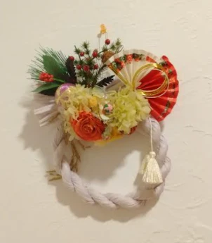
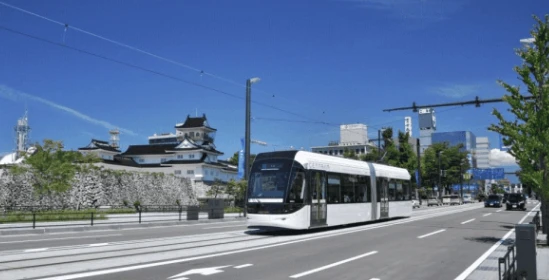
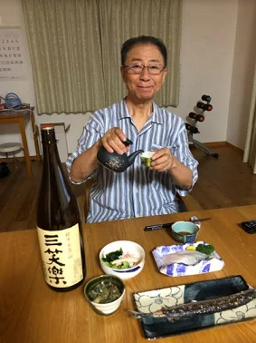
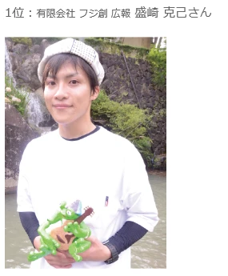
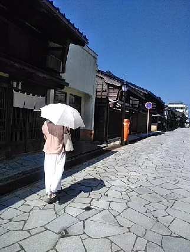

フローリング11種類＋その他の床材まとめ
こんにちは✨ 富山県で自然素材の家づくりをしている「フジ創」です✨ フローリング11種類＋その他の床材まとめ 床材には主に以下のような種類があります。 床材 詳細 フローリング ●「無垢材」と「複合」の2タイプ ● 一般
続きを読む →FUJISOU AINOS JOURNAL
家づくりのこと、暮らしのこと。
日々の想いを、お伝えします。
日常 28件 ／ 新しい記事から 1・2ページ
こんにちは✨ 富山県で自然素材の家づくりをしている「フジ創」です✨ フローリング11種類＋その他の床材まとめ 床材には主に以下のような種類があります。 床材 詳細 フローリング ●「無垢材」と「複合」の2タイプ ● 一般
続きを読む →
こんにちは✨ 富山県で自然素材の家づくりをしている「フジ創」です✨ 「免疫力アップのための食べ物」 免疫とは、ウイルスや病原菌から体を守り戦う「抵抗力」のこと。体内にウイルスや細菌、花粉などの"異物"を侵入させないように
続きを読む →
新年あけましておめでとうございます。 2025年もよろしくお願いいたします。 自然素材の家づくりをしている「フジ創」です✨ 「 冬の体調を整える食べ物とは？家族みんなで元気に冬を乗り切ろう！ 」 寒い日が続きますが、皆さ
続きを読む →
こんにちは✨ 富山県で自然素材の家づくりをしている「フジ創」です✨ 冬の手乾燥のついておすすめハンドクリーム 「 さらさら感と保湿力を両立し手元を美しく保つ 」 手肌の乾燥を防ぎ保湿するハンドクリームは、使用感の好みがわ
続きを読む →
こんにちは。 富山県で自然素材にこだわった家づくりをしている 「フジ創アイノス」です。 今日は10月11日火曜日。 天候は、曇り空に時々雨です。 気温は、肌寒いです。 今日も体調管理に気をつけましょう。 本当に、秋になり
続きを読む →
こんにちは。富山で自然素材にこだわるホンモノの家、フジ創アイノスです。 今日は冬に逆戻りしたように寒かったですね。 寒暖差が激しいので体調管理に気をつけてくださいね。 アイノスの荒井社長、健康のためにデスク作業は立ってし
続きを読む →
明けましておめでとうございます。富山で自然素材にこだわるホンモノの家、フジ創アイノスです。 旧年中は格別のお引き立てを賜り、誠にありがとうございました。 今年も皆様の家づくりのお役に立てるよう、社員一同邁進してまいります
続きを読む →こんにちは。富山で自然素材にこだわるホンモノの家、フジ創アイノスです。 今日は３月１１日いのちの日です。 東日本大震災が起きて10年が経ちました。 多くの命が失われた悲劇を忘れないため、そして命の大切さを考える日として作
続きを読む →こんにちは。富山で自然素材にこだわるホンモノの家、フジ創アイノスです。 今日から３月、よく晴れた春らしい陽気になりましたね。 近頃暖かくなり、公園に出かけたり散歩をしたりする人を多く見かけるようになりました。 コロナへの
続きを読む →
こんにちは。富山で自然素材にこだわるホンモノの家、フジ創アイノスです。 今日は節分です。 ２月２日が節分になるのは、124年ぶりだそうですね。 一生に一度あるかないかの日ということで、なんだか特別感のある日となりました。
続きを読む →
こんにちは。富山で自然素材にこだわるホンモノの家、フジ創アイノスです。 衣服はなぜ必要なのでしょうか。 その起源は、身体を保護することから始まっています。 雨、風、紫外線、暑さ寒さを防いで体温を保持する「衣」は、食住と並
続きを読む →
こんにちは。富山で自然素材にこだわるホンモノの家、フジ創アイノスです。 記録的な大雪となり、大変な日々をお過ごしかと思います。 富山県は車社会なので、このような大雪になると交通障害が重大です。 今回の大雪で多くの人が何時
続きを読む →こんにちは。富山で自然素材にこだわるホンモノの家、フジ創アイノスです。 今日はクリスマスです。 日本ではよくイブは恋人同士で過ごし、クリスマスは家族でケーキを食べたり、子どもにプレゼントを渡したりします。 本来はキリスト
続きを読む →こんにちは。富山で自然素材にこだわるホンモノの家、フジ創アイノスです。 今日はクリスマスイブ。 子供たちはサンタさんが来てくれるのを楽しみにしていますね。 サンタさんはフィンランドのサンタクロースヴィレッジに住んでいるそ
続きを読む →こんにちは。富山で自然素材にこだわるホンモノの家、フジ創アイノスです。 本日１２月１１日は、「胃に良い」にちなんで「胃腸の日」です。 現代人はストレスが多く、生活習慣も乱れやすいので、デリケートな器官の胃腸は荒れやすくな
続きを読む →
こんにちは。富山で自然素材にこだわるホンモノの家、フジ創アイノスです。 全国住み続けたい街ランキングで、富山県富山市が１位に輝きました。 街並み・雰囲気、安全、店の充実、交通の便利さなどが高く評価されたようです。 富山市
続きを読む →
こんにちは。富山で自然素材にこだわるホンモノの家、フジ創アイノスです。 今日は、荒井社長のプライベートをのぞいてみます。 毎日晩酌を楽しんでいます♪ この日はアンカン刺身、カニときゅうりの酢の物、焼きさんま、 茄子とピー
続きを読む →
こんにちは。富山で自然素材にこだわるホンモノの家、フジ創アイノスです。 フリーマガジン「Lien（リアン）」さんの企画、 イケ男カンバニスト総選挙で、我が社のスタッフ盛崎くんが優勝しました！ 「イケ男（イケダン）」＝「イ
続きを読む →
こんにちは。富山で自然素材にこだわるホンモノの家、フジ創アイノスです。 モデルハウスのある高岡市内免のすぐ近く、金屋町に行ってきました。 高岡鋳物発祥の地で、 鋳物師町として全国ではじめて伝統的建造物群保存地区の選定を受
続きを読む →こんにちは。富山で自然素材にこだわるホンモノの家、フジ創アイノスです。 今日は７５回目の終戦記念日です。 先日氷見市在住の80代の男性が、 「富山大空襲の日、氷見の海岸から飛行機が爆弾を落としているのが見えた。とても怖か
続きを読む →
こんにちは。富山で自然素材にこだわるホンモノの家、フジ創アイノスです。 ようやく長かった梅雨が明け、夏らしくカラッと暑くなりましたね。 我が家には実家の畑で採れた夏野菜が届きはじめました。 今年の夏は猛暑といわれています
続きを読む →
こんにちは。富山で自然素材にこだわるホンモノの家、フジ創アイノスです。 今日から4連休、皆様いかがお過ごしでしょうか。 コロナウイルスの影響で、まだ旅行や外出は控えている方が多いかと思います。 そんな中、家で楽しく過ごせ
続きを読む →
こんにちは。富山で自然素材にこだわるホンモノの家、フジ創アイノスです。 富山県は全国的にみて自然災害の少ない県です。 下のランキングは、2011年～2020年まで各都道府県の地震が起きた回数を調べたものです。 富山県は全
続きを読む →
こんにちは。富山で自然素材にこだわるホンモノの家、フジ創アイノスです。 今日は6月21日、父の日ですね。 素敵なプレゼントを用意して、日頃の感謝を伝え家族で過ごす方も多いと思います。 今年は父の日のギフトに、涼しいマスク
続きを読む →